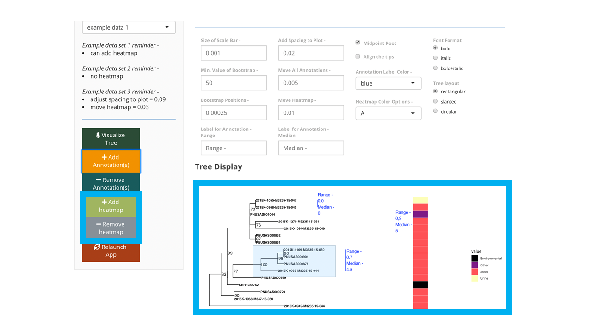

What is tinselR?
tinselR (pronunced tinsel-er) at its’ most basic level is a graphical viewer of Newick-formatted phylogenetic trees and as an application for producing publication-ready figures. The power of tinselR comes with combining a genetic distance matrix for annotating a tree for epidemiological outbreak analyses. A genetic distance matrix contains SNP differences for all pairwise comparisons for the tips on the tree. One can also include a heatmap when that data is provided in the meta data file.
Issues, problems, suggestions, thoughts
If you have any the above, please submit an issue on github located here.
Requires -
- ggtree; see the quick start for how to install ggtree.
- treeio; which will install with ggtree.
- R version >= 3.5

Quick Start
1). Install devtools package
Run this code in your R console -
install.packages("devtools", dep=T)
2). Install ggtree and treeio
if (!requireNamespace("BiocManager", quietly = TRUE))
install.packages("BiocManager")
BiocManager::install("ggtree")3). Install and launch the tinselR shiny application
4). Load your data or use the example data
Please click on the ‘Data Upload’ pane, where you can upload your files. Example data is available for playing with tinselR in the ‘Example Data’ pane of the application. The example data sets include all three files (tree, gene, and meta) and are available for selection via one drop down menu
Phylogenetic Tree - required; a Newick generated tree
Genetic Distance data - optional for use with the annotation function; a tsv/txt/csv file - see below for image of genetic distance matrix.
genetic Distance screenshot

- Metadata - optional for easy correction of tip labels or adding a heatmap; a tsv/txt/csv file - requires column headers of Display.labels and Tip.labels. See image below for a csv file example.
meta Data screenshot

5). Alter or annotate your tree
Once the phylogenetic tree is uploaded you can -
- Alter visualization parameters. See below for tree with aligned tips.

Once the genetic distance file is uploaded you can -
- add annotation to the visual representation of the tree. See below for a tree with annotated clades including the range of SNPs.

If column for heatmap is included in metadata file you can -
- add the heatmap on to a tree with or without annotations. See below for a tree with annotated clades and a heatmap.

Known issues as October 23, 2020
- If user uploads tree and genetic distance matrix and then annotates the tree, and then selects a meta data file, all previously placed annotations are wiped from the tree image.
If you are interested in seeing the session info for the computer that developed this application please visit this link. Here all packages and versions that were installed on a windows machine are listed and successfully runs tinselR.